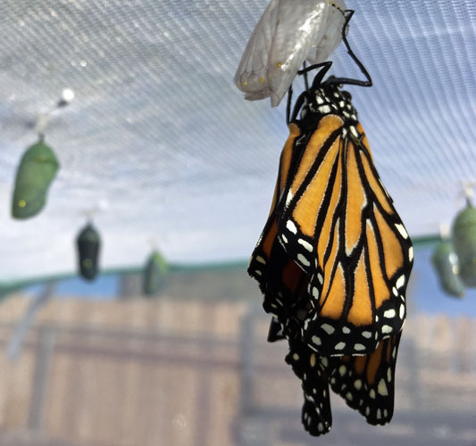

About Me
Terri Lyman lives in Northern Arizona. She enjoys the outdoors, kitchen gardening, and crafting. One of her hobbies is observing, tagging and occasionally raising monarch butterflies. She is interested in web design, computer programming, and health care as well. A mother and grandmother, she wants to encourage curiosity and a spirit of adventure in those she meets.
Terri built and uses an insulin dosing device that allows a Medtronic insulin pump, Dexcom Continuous Sensor, and an Edison micro-computer to automatically adjust insulin doses. You can learn more about this at OpenAPS, Loop, Nightscout and Tidepool.
Thanks for visiting! Send a note, ask a question, or tell me what you liked! Contact me.